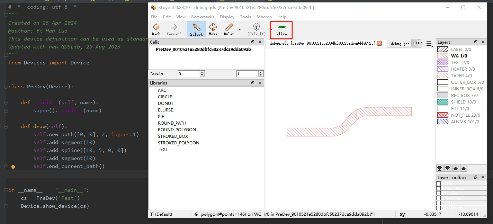
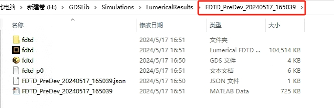

其它功能: 预览和仿真
器件预览
Device 类还提供了静态方法用于器件预览, 需要于 KLayout 安装插件 klive. 预览代码示例如下
from Devices import Device
class PreDev(Device):
def __init__(self, name):
super().__init__(name)
def draw(self):
self.new_path([0, 0], 2, layers=1)
self.add_segment(10)
self.add_spline([10, 5, 0, 0])
self.add_segment(10)
self.end_current_path()
self.add_port('i1', [0, 0], np.pi, 2)
self.add_port('o1', [30, 5], 0, 2)
if __name__ == "__main__":
cs = PreDev('Test')
Device.show_device(cs)
下面给予简要说明.
上述代码段完成了器件的最基本配置, 包括一条波导的绘制以及端口定义.
器件 PreDev 定义完成后, 仅需建立该器件的对象, 随后将此对象作为参数输入函数 Device.show_device(), 运行即可在 KLayout 完成预览.
如下图
{kind=link}

图中红框中的绿色 klive 标记, 为 KLayout 配置成功的标记.
器件仿真
器件库还提供了器件仿真的支持, 以 PreDev 为例, 介绍使用方法. 在以上定义基础上, 通过以下代码调用即可.
from Devices import FDTDSimulator
pd = PreDev('PD')
simu = FDTDSimulator(pd, 'i1', accuracy=3,
wg_height=800e-9,
wavelength_start=1.540e-6,
wavelength_stop=1.560e-6,
wavelength_number=11,
top_clad=1.5e-6,
bottom_clad=1.5e-6,
side_clad=2e-6,
port_clad=2e-6,
gpu=True
)
simu.fdtd_model_establish(run=True)
首先生成待仿真器件的对象, 随后初始化 Simulator 对象, 第一个参数即待仿真器件. 第二个参数为光源输入端口, 默认为 TE00 模式输入. 后续参数与仿真模型建立有关, 其中 XXX_clad 为波导器件距离 FDTD 仿真区域几个边界的距离. 参数 gpu 为是否调用 GPU 进行仿真, 模型不能太大, 否则会爆显存.
{kind=link}

仿真程序会自动根据程序开始时间创建文件夹, 其中文件包括用于仿真的 gds 版图, fdtd 项目文件, 以及存储仿真器件参数的 json 文件. 仿真结果同样会被提取出 S 参数与 z=0 截面的电场分布, 存储于 matlab 的数据文件中, 用于后续处理.